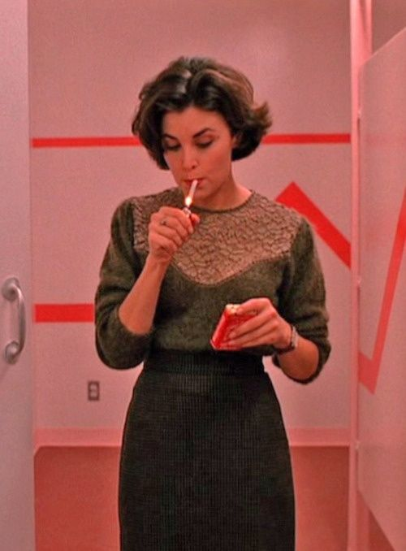
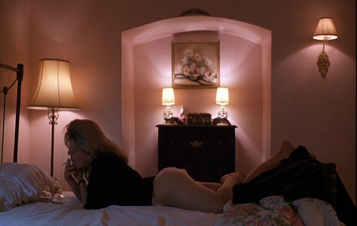
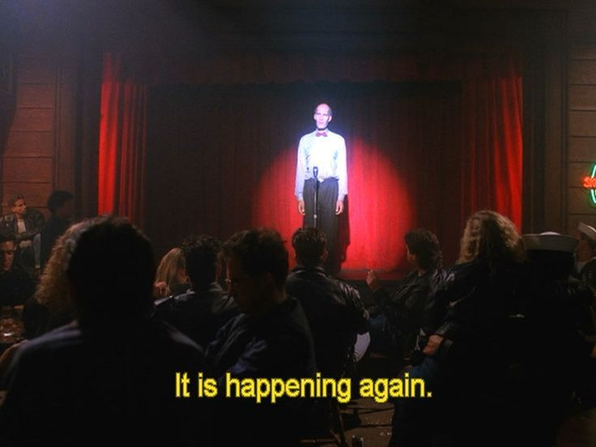
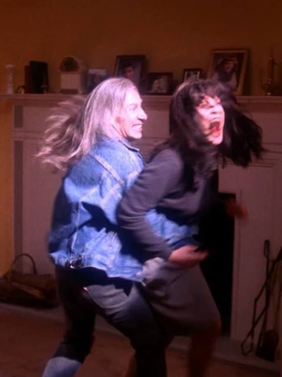
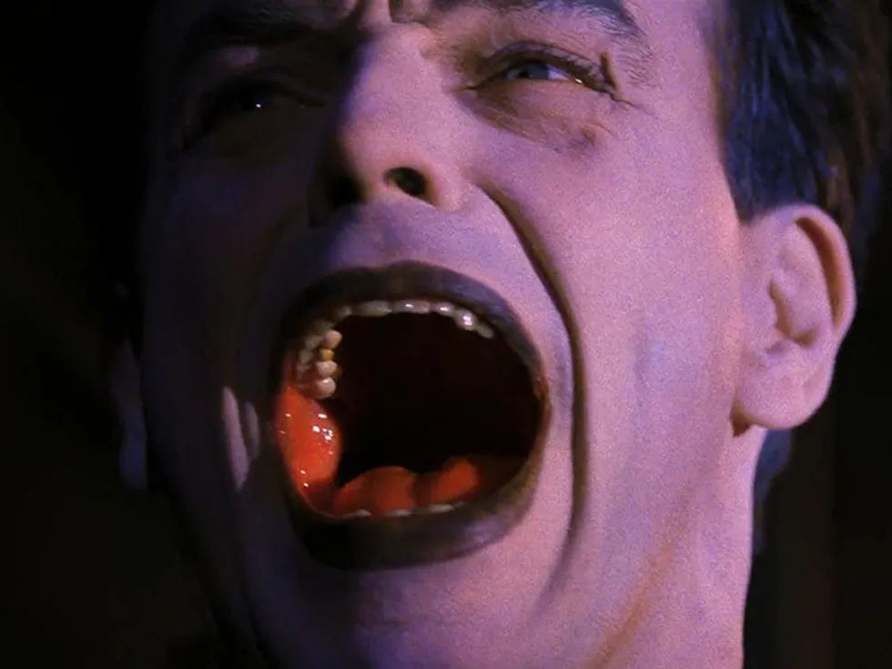
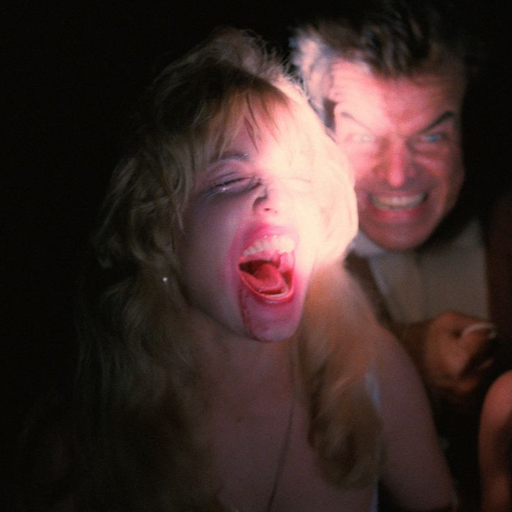

INTRODUCTION:
Darkness casts over the world every night, as expected, with that eerie consistency. That darkness we are all so familiar. We illuminate the night sky with streetlamps and headlights and the warm light of windows in our homes. A long-lasting tradition we carry to defend ourselves from that eternal darkness that outlives us all, for every day the sun rises it sets. We are of course capable of providing light in place of the sun, but in nature there is a consistent duality, therefore we are of course also capable of festering darkness. Our inherent desires and underlying temptations cast a shadow over us. We share in this world a tendency towards evil. Perhaps it is too laborious a task to truly understand evil in every form, perhaps we aren’t meant to have all the answers. It is still important to explore and question, as they have done for centuries before me, the nature of evil. Specifically, the type of evil I want to explore is one we each may find particularly personal, how tendencies towards evil and darkness find themselves in our unconscious. Moreover, how abuse perpetuates such evils in both individual psyches and the collective unconscious, to understand how generational trauma and cultural mythologies interplay in the creation of darkness. I intend to explore how such feelings exist outside of ourselves, in various aspects of our society and in our culture, and the role that art and media plays in the creation and representation of certain themes. I want to emphasize the significance in this exploration, to ignore each of our tendencies towards evil is to perpetuate it. To simply disregard the darkness inside of us is to live in the dark from ourselves, unable to achieve that genuine authenticity and maximize our potential for fulfillment, and from reality, limiting the ability to critically think for oneself and question, remaining susceptible to the manipulations and untruthful narratives of society, to be a pawn in the larger scheme, and remain in the self-sustaining cycles of control. Even for myself, I know most of what I know is only the tip of the iceberg, and every subtle irritation or deep rooted fear may point to something larger, and my commitment to understanding what it all means is born out of the desire to engage in the life long process of self-realization, and through my individual awareness I can achieve a better awareness of the world around me. I know that there is endless room for interpretations on the natures of evil and its presence in the spaces previously mentioned, which is why this exploration is open to and encourages various perspectives, new insights, and potential contradictions.

PHILOSOPHICAL ANALYSIS:
When confronting the darkness, we hope to understand it, to shine a light on the things unknown. What I want to explore is that darkness harbored in each of us, whether we have confronted it or not, it’s there. It is crucial in this exploration to shine that light and better understand what that darkness is. It lives in our minds and in our consciousness, they exist in the world around us, they pass down from generation to generation, in the walls around us, in the cracks and seams of our society. To better understand this specific type of evil requires a clearer understanding on the nature of evil itself. This calls for an examination of philosophical frameworks, a long standing and ongoing conversation, in its various attempts to understand and define evil in itself. A profound thinker in existentialist philosophy, Friedrich Nietzsche in his Beyond Good and Evil states “He who fights with monsters should be careful lest he thereby become a monster. And if you gaze long enough into an abyss, the abyss will gaze back into you.” (Nietzsche, p. 89). This is in ways a warning on confronting evil, that staring too long into the darkness, one can get lost and become consumed by it. Yet Nietzsche’s warning emphasizes that whilst playing with fire, one must expect the possibility of being burned. An interaction with evil, weather intentional or not, willing or not, creates the possibility of inheriting that evil. If there is abuse in the home for example, and a child is raised in that environment, that child is growing up with the very real possibility of becoming evil themselves. The abyss, that deep and unsettling darkness, as Nietzsche states, staring at for too long signifies an intense engagement with those darker parts of the human condition. Prolonged focus can blur the lines between evil and the observer, alluding to the duality of human nature and the coexistence between good and evil within and around us. Yet it is important to wonder how much agency “The Abyss” has over us. To go further on these concepts of good and evil, in another of his works, The Will to Power, Nietzsche states “What is good? All that heightens the feeling of power, the will to power, power itself in man. What is bad? All that proceeds from weakness.” (Nietzsche, p. 55). Here he redefines morality not in fixed categories of “good” and “evil”, but through a lens of power dynamics and self-assertion. To be good in this context is associated with strength and agency over oneself, while bad arises from weakness or lacking the ability to act out of free will. This becomes relevant to exploring the nature of evil in relation to cycles of generational abuse. This would mean that a person who can be seen as “bad” or “evil” in the case of an abuser is acting out of weakness and a feeling of lack of free will, and abuse only perpetuates those feelings onto the abused. Each generation, unable to confront its own trauma or darkness, passes that unresolved pain to the next, strengthening and deepening the long-standing cycles of abuse. The root of evil is not only external but internal, and stems from a failure to act with strength and authenticity. Beyond the dangers of acting out of weakness or lack of free will, Hannah Arendt expands on causes for perpetuating such evils in her Eichmann in Jerusalem: A Report on the Banality of Evil, she states "The sad truth is that most evil is done by people who never make up their minds to be good or evil." (Arendt, p. 287). Arendt intends to describe how people commit horrific acts not out of malevolence but out of pure thoughtfulness. The stark meaning of the words “banality of evil” represent the concept that evil can be born out of a stark and frightening passivity. This emphasizes the dangers in the failure to confront one’s moral responsibilities. A failure to hold oneself accountable and examine their inherited patterns of behavior is to reinforce the cycles of abuse and evil. Even more frightening about this realization than its subtle danger is the tendency to passivity in our society. The fabric of our world is constructed to keep us passive, so we remain susceptible to control in the systemic power structures. The dynamics in the power structures of abuse are not unlike the dynamics of control in our society, and it is likely the two are not unrelated. This only confirms that the evils that exist in ourselves and in our homes also exist outside of ourselves and in the collective. Evil is a vast and complex concept to grasp, but it can be said that it is born out of weakness and thoughtfulness to say the least. It seems imperative to harness our ability of free will and creativity, strength, and authenticity, while remaining accountable and responsible, and critically examine our patterns and behaviors, to truly and responsibly shine a light on the darkness. Doing so will allow us to take control of ourselves and engage in the lifelong commitment of breaking cycles of generational abuse and separating ourselves as much as possible from the evils in the world we inherit.

PSYCHOLOGICAL ANALYSIS:
We seem to try and exempt ourselves from the darkness. We perceive ourselves as creatures of the light, and when that night seems to fall, so do we, in the comforts of our homes under the warmth of our sheets. Perhaps we are comfortable with evil enough to accept its presence, yet if the subject seems to land on us, we reject it. As if it was utterly out of the realm of possibility that we could be responsible for any greater harm or destruction. At least the kind so terrifying we keep locked behind the television screen. Yet as we can establish, it lives within us and around us, and thrives in climates of weakness and suppression. It is our shadow. The work of Carl Jung and his contributions to psychology present as crucially relevant in this exploration of the nature of evil, particularly in discussion of our “shadow”. In his work Aion: Researches into the Phenomenology of the Self, he states “The shadow is a moral problem that challenges the whole ego-personality, for no one can become conscious of the shadow without considerable moral effort. To become conscious of it involves recognizing the dark aspects of the personality as present and real.” (Jung, p. 8). Jung describes the shadow as the darker aspects of the self, which often disrupts one’s self-perceptions by revealing contradictions, flaws, and impulses that go against the identity constructed by societal expectations and personal aspirations. He emphasizes the moral effort involving self-reflection and honesty, and that without this effort the shadow remains unconscious. This concept becomes particularly significant in the case of generational traumas, suggesting that the darkness inherited through abuse can only be broken when individuals consistently engage with their shadow self. Not only understanding their subconscious tendencies towards harm but also the origins of behaviors in the shadow from their own upbringing and societal conditioning, fostering psychological growth and healing. Yet the darkness is not limited to our own shadows. Jung in his The Archetypes and the Collective Unconscious states, “The collective unconscious is a part of the psyche which can be negatively distinguished from a personal unconscious by the fact that it does not, like the latter, owe its existence to personal experience and consequently is not a personal acquisition.” (Jung, p. 3). Here he distinguishes between the personal unconscious, which consists of repressed memories, experiences, and emotions unique to an individual, and the collective unconscious, which is universal and shared among all humans. Jung viewed the collective unconscious as a collection of shared human experiences that transcend time and culture. A universal layer of the psyche that we all inherit. This means that elements of the collective unconscious, such as archetypes like the Mother, Hero, or the Shadow, influence all of us. The collective unconscious provides a framework for understanding how generational trauma persists even in individuals who did not directly experience the events. Trauma and unresolved pain are encoded in archetypal patterns and passed down through familial or societal narratives, shaping behaviors and emotional responses in ways that we may not consciously understand. Jung’s insights remind us of the importance of recognizing these inherited patterns to break cycles of harm and achieve psychological integration. In his Two Essays on Analytical Psychology, Jung describes individuation as “becoming a single, homogeneous being and, in so far as 'individuality' embraces our innermost, last, and incomparable uniqueness, it also implies becoming one’s own self. We could therefore translate individuation as 'coming to selfhood' or 'self-realization’ (Jung, p. 173). This requires confronting the shadow, those dark and repressed aspects of ourselves, and reconciling it with our conscious ego. It also involves recognizing how the collective unconscious, especially inherited traumas, shape us so we can break the generational cycles of harm, and achieve wholeness. Yet this concept of individuation can push the bounds of what we know as generational trauma, going beyond the uniquely personal aspects of upbringing, and connecting to the collective in greater ways. Murray Stein states in his Jung’s Map of the Soul, “Individuation is not merely a personal journey but one that involves reconciliation, or new ways of reflection with the collective past, including inherited traumas and societal structures that shape the psyche.” (Stein, p. 42). Stein builds on Jung’s concept by emphasizing that individuation is not solely an individual process but also involves addressing the collective past. This includes inherited traumas, cultural narratives, and societal structures that influence one’s psyche. Beyond personal healing, Stein’s interpretation suggests that individuation can lead to societal transformation by addressing the collective shadows that exist all around us. Individuation is a difficult concept to grasp, perhaps because we are among the belief that one can become individuated. Sometimes a tangible goal point is a useful fiction, but individuation exists on an ever-receding horizon, and is instead a process of becoming.

INTERVIEW ON GENERATIONAL TRAUMA:
A lot can be said from an individual’s experience, especially on the subject of trauma. We cannot discuss the nature of evil passed down generationally without acknowledging its presence all around us in anecdotes and stories. The nature of this exploration causes us to think of our personal encounters with abuse, whether it be our own experiences, our neighbors, or our close friends, or our loved ones. There is no shortage of it, even on a hyperlocal scale. In conversation with Lane Huitt, a construction entrepreneur and author in the area, he discussed his experience growing up and breaking out of his family’s restrictive religion, which he refers to as a “destructive cult”, and how his past experiences informed him to become the person he is today. Lane Huitt's journey illustrates how confronting and integrating the darkness within us can break generational cycles of abuse and lead to profound personal growth. Raised in rural Oregon, a town of 2,000 or so people, and a third generation Jehovah’s Witness, Huitt now lives in Rogers Park and has a fascination with writing and philosophy, and dedicates much of his time to deepening his understanding of himself and breaking the patterns that raised him. Huitt states, "My family is stuck in a loop, being inside of a destructive religious system that uses manipulation and propaganda to keep people inside.", he goes on to mention "Generational cycles of repression and abuse create a deep-rooted impact that plays out across multiple generations.". His experience on leaving is profound, because this environment of abuse does not promote critical awareness and determination to break the cycle and leave. In his journey of breaking through, he continues, "The questions of our ancestors that go unanswered become our soul's purpose.". His words highlight the deep connection between unresolved generational struggles and the individuals search for meaning. In exploring the cyclical nature of trauma, we find that patterns of evil embed themselves into those who inherit them. These unanswered questions exist beyond relics of the past and become active forces in discovering ourselves and shaping our decisions. Huitt adds, “Trauma, like religious ostracism and repression, serves as a prompting to dig deeper into faith, sexuality, and human connection.”. Confronting traumas, as he suggests, provides a gateway to opening deeper and more fulfilling aspects of our lives. Building on this idea, Huitt explains, "Trauma informs us not just about where we've been hurt, but about where our soul’s journey is meant to go.". His insights remind that shining a light onto the darkness can reveal a path into a broader philosophical and spiritual discovery. When asked about the presence of evil in his own conscious, Huitt mentions, _"_I used to think I had to choose between being the good boy or the mischievous one, but I’ve learned they need to coexist.", he goes on to say, "The tension between opposites, between good and evil, is where growth and understanding emerge.". Through his internal contradictions of good and evil, it is found that a balance between light and darkness is crucial. Not only does this suggest digging deeper into those darker aspects of the self, but it also embraces it. To understand the evil parts of ourselves we must allow ourselves to be both. He further explains, "Integration is the key—when you let all parts of yourself communicate, you create something more balanced and whole."… "The missing piece was allowing both sides to live together—to meet in the middle and become more than either alone could be.". This highlights the necessity of acknowledging and embracing all facets of our identity to achieve personal wholeness and disrupt harmful patterns. Integration allows us to transcend limits of good and evil and the prophecies of abuse by allowing us to create a complex and nuanced awareness and understanding of ourselves. He concludes perfectly by stating "The goal isn’t to ‘win’ as good or evil but to uncover truth, a process that is always evolving.". Huitt’s experience in walking deep through the darkness, often coming face to face with the abyss, has revealed a profound value in exploring each of our own evils. Confronting the darkness may not be to eradicate it, but to use it to guide us to our soul’s greater journey and purpose. We should accept our capacity to be the villain, the contradiction that we can do bad things whilst striving to be good. The goal should be to expand consciousness and push the horizon of understanding further. “The unexamined life isn’t worth living, and for me, understanding my purpose is foundational to everything I do.". Huitt's experience serves as a testament to the transformative power of self-exploration, a journey that not only illuminates the shadows within but also paves the way toward a more conscious and purposeful existence.

TWIN PEAKS ANALYSIS:
Beyond a philosophical or psychological lens, or even the lens of personal experience, there is one medium that makes room for potent interpretations and commentary of evil in ourselves and in the world. Perhaps the place we are most often openly exposed to discussions of evil in our society is in art, and in the media. Film and television play a large role, and one example that has presented itself immensely valuable in this exploration is the television series Twin Peaks, created by Mark Frost and David Lynch, as well as the prequel film Fire Walk With Me, directed by David Lynch. Twin Peaks is a story that captures the small-town charm of a fictional idyllic community that masks a deeper, pervasive darkness. This darkness is most visceral in the character of Bob, a supernatural entity that captures the themes of evil and corruption. The significant thing about Bob is that unlike conventional portrayals of evil, he is intrinsically tied to the inner lives of the characters he inhabits, particularly Leland Palmer and his daughter Laura. This fusion of supernatural absurdity and the psychological and spiritual allows Twin Peaks to explore how evil manifests itself not only in individuals, but in families and communities, making it an enduring commentary on the cycles of harm that perpetuate human suffering. Bob, introduced as a malevolent entity from a mysterious, hell like place, serves as the series’ ultimate representation of evil. Described as a ‘parasite,’ Bob inhabits individuals, driving them to commit unspeakable acts while feeding off their pain and suffering. His most notable host is Leland Palmer, a seemingly loving father who is revealed to have abused and ultimately killed his daughter, Laura Palmer, under Bob’s influence. One of the most harrowing moments in Twin Peaks is when Leland Palmer, possessed by Bob, brutally murders his daughter’s cousin, Maddy Ferguson, cleverly played by the same actress as Laura. This scene depicts Bob tormenting and kissing Maddy in laughter while she’s screaming and crying covered in blood, then the camera fades to Leland instead of Bob, in tears and pain himself, crying out for his daughter Laura, while Maddy continues screaming in his arms (Lynch, Season 2, Episode 7). This scene is disturbing not only for its graphic violence, but the way it juxtaposes Bob’s laughter with Leland’s tears. This scene exemplifies how Bob functions as the externalization of Leland’s repressed desires and traumas. While Bob is often portrayed as a supernatural entity, his possession of Leland can be interpreted as a metaphor for the darker aspects of human nature—the ‘shadow’ self that Carl Jung describes. Leland’s outward demeanor as a loving father and community member contrasts sharply with the horrific acts he commits under Bob’s influence, illustrating how evil often hides beneath socially acceptable facades. Bob’s control over Leland suggests that evil is not solely an external force but also something that feeds on and amplifies existing psychological wounds. The horror of this scene lies not only in the violence itself but in the tragedy it represents. Maddy’s murder is a direct result of the generational trauma that haunts the Palmer family. Leland, who was likely a victim of Bob’s influence as a child, becomes both a perpetrator and a victim, perpetuating the cycle of abuse. The contrasts between Bobs monstrous force and Leland’s suffering underscores the complex interplay between agency and possession, leaving the audience to question where Leland ends, and Bob begins. Similarly, the prequal Fire Walk With Me depicts the symbolic meanings behind Bob and his inhabitance, but this time from Laura Palmer, Leland’s daughters perspective, leading up to and the night of her murder. In this film, Laura’s visions of Bob take on a visceral intensity, this seems to represent her realization for the abuse she has endured and the pervasive evil surrounding her. One of the most haunting scenes is when she encounters Bob in her bedroom at night and begins to rape her in her sleep, and the camera cuts and she sees her father’s face in Bob (Twin Peaks: Fire Walk With Me). Bob’s presence in. Laura’s visions reflect not only an external threat but also the internalized fear and confusion that come from years of abuse. As she begins to piece together the connection between Bob and her father, Leland, Bob becomes a representation of repressed truths Laura struggles to confront. Laura’s refusal to fully succumb to Bob’s control is central to her character’s arc in Fire Walk with Me. Despite the overwhelming fear and powerlessness she feels, Laura’s visions of Bob serve as a catalyst for her ultimate act of resistance. As she wrote in her secret diary the night she died, “Tonight is the night that I die. I know I have to because it's the only way to keep Bob away from me. The only way to tear him out from inside. I know he wants me. I can feel his fire. But if I die, he can't hurt me anymore" (Twin Peaks: Fire Walk with Me). By recognizing Bob’s evil and choosing to confront it, even at the cost of her life, Laura takes a stand against the generational cycle of abuse represented by her family’s dark legacy. While a tragic outcome, her bravery to recognize her own tendencies towards darkness and her determination to break the pattern is a larger reminder for us to take action of our own evils, and reject the prophecies that trauma provides. For most of us, our outcomes can be much more hopeful than Laura’s, we just have to try. Perhaps one of the most insightful moments in the show is after Leland dies, and Bob leaves him, the sheriff Harry Truman has a difficult time believing and understanding that “Bob” is real, and Agent Cooper responds, "Harry, is it easier to believe a man would rape and murder his own daughter?" (Twin Peaks, season 2, episode 9). This question seems to explain the entire purpose behind Bob as a character in the show, and the greater presence of evil in art and media, and in how we cope with such darkness in ourselves and in our world. Bob is s a metaphor for repressed desires, traumas, and the darker impulses we all possess. When life reaches a point of terror so unbearable, our minds separate it from ourselves or our constructed reality as a coping mechanism, because it is not easy to fathom a man would kill and rape his innocent daughter, or for that matter that man is capable of such things at all, that would mean each of us, personally, are as well.

ART AS A TOOL:
The importance of art and media like Twin Peaks is that it provides a way for us to explore the darkness we may not want to confront in an indirect and impactful way. It can be hard to notice the darkness around us, but it is there, and it reveals itself in mysterious ways. Often in the most authentic and genuine of moments. Art can be the mirror of the collective shadow, and love can be the lens for darkness. It is much easier to shine a light on something else than on ourselves, but by doing so we create a reflection that shines back at us anyways. Susan Sontag asserts in her essay Against Interpretation, "Real art has the capacity to make us nervous. By reducing the work of art to its content and then interpreting that, one tames the work of art." (Sontag, p. 10). As Sontag suggests, art’s power lies in its ability to make us uneasy, challenging us to confront what we would rather ignore. Twin Peaks exemplifies this by shining a light on the darkness of generational trauma, societal repression, and human weakness. By experiencing the unsettling narrative, viewers are compelled to reflect on their own moral complexities and the hidden evils within their communities. In this way, David Lynch used not only Twin Peaks, but the medium of television, to force us to see ourselves. Television and media also are what informs us all in society, revealing the power in the medium because it is even a commentary on itself. Catherine Happer and Greg Philo highlight the media's pivotal role in shaping public perception beyond the personal sphere. As they argue in The Role of the Media in the Construction of Public Belief and Social Change, “The media play a central role in informing the public about what happens in the world, particularly in those areas in which audiences do not possess direct knowledge or experience.” (Happer & Philo, p. 321). In understanding the role media plays in our culture, we can build a bridge between how the personal is interwoven with the societal. The same ways that media acts as a mirror on our own darkness, it reveals the darkness in the structure of our society. The media informs us on what we do not know, and systems are in place so we continue to be oblivious and avoid our own conclusions, so we can believe whatever narrative is trying to be told through the media by the people who capitalize off of our passivity. Just like how if we fail to confront our traumas, hold ourselves accountable, act on free will, and avoid passivity, we risk falling victim to the cycles of generational abuse, if we fail to do those things, we also fall victim to the cycles of control in our society.
CONCLUSION:
At its core, the exploration of evil is not just about understanding what lies hidden in the darkness, but about transforming it. It is about balancing the dual nature of things, ‘good’ and ‘evil’, to create something that transcends all that came before it. To face the darkness is not to be consumed by it but to integrate it, allowing its lessons to shape a more profound understanding of the self and the world. By confronting the dark and in many ways, the continuous process of becoming it, by balancing that with the good, the soul finds a deeper purpose. A guiding light in the eternal darkness. From the ground we walk on to the stars and planets above us, the universe has a desire for expansion, and it is our job to push the horizons of understanding further. The shadows we follow are not just our own but of those of all whom came before us. Stories passed down and forgotten, but still heard faintly in alleyways and on dark lonely nights. In tears we find laughter. We find peace in the sorrow. The light can be terrifying, and the darkness can be beautiful. In the endless pain and suffering of the discontinuity in life, we sit waiting for our fate. In death we will be continuous forever, and become one at last with the rest.

Frost, Mark, and David Lynch, creators. “Lonely Souls.” Twin Peaks, season 2, episode 7, ABC, 10 Nov. 1990.
Frost, Mark, and David Lynch, creators. “Arbitrary Law.” Twin Peaks, season 2, episode 9, ABC, 1 Dec. 1990.
Happer, Catherine, and Greg Philo. “The Role of the Media in the Construction of Public Belief and Social Change.” Journal of Social and Political Psychology, vol. 1, no. 1, 2013, pp. 321-336. https://doi.org/10.5964/jspp.v1i1.96.
Huitt, Lane. Personal interview. Conducted by Shy Tandon, 4th Dec. 2024.
Jung, Carl. Aion: Researches into the Phenomenology of the Self. Translated by R. F. C. Hull, Princeton University Press, 1959.
---. The Archetypes and the Collective Unconscious. Translated by R. F. C. Hull, 2nd ed., Princeton University Press, 1968.
---. Two Essays on Analytical Psychology. Translated by R. F. C. Hull, 2nd ed., Princeton University Press, 1966.
Lynch, David, director. Twin Peaks: Fire Walk With Me. New Line Cinema, 1992.
Nietzsche, Friedrich. Beyond Good and Evil. Translated by Walter Kaufmann, Vintage Books, 1966.
---. The Will to Power. Edited by Walter Kaufmann, translated by Walter Kaufmann and R. J. Hollingdale, Vintage Books, 1967.
Sontag, Susan. Against Interpretation and Other Essays. Farrar, Straus and Giroux, 1966.
Stein, Murray. Jung’s Map of the Soul: An Introduction. Open Court Publishing, 1998.